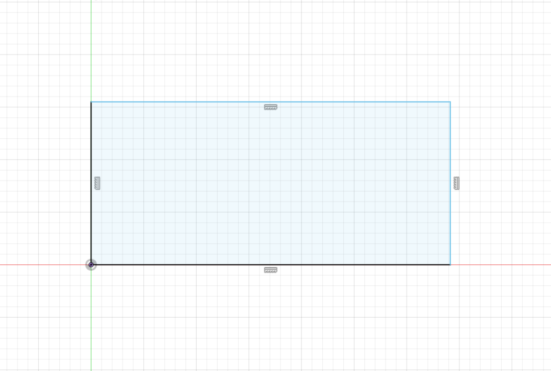

Fusion 360
What is fusion 360?
Fusion 360 is a 3D computer aided design (CAD) software by autodesk
3D modeling Process
Sketches are first made on a 2D plane and then extruded to make an solid body.
Another sketch can be made on the surface of the body and extruded to make a cut
Modeling horse chesspiece
First a image of the horse chesspiece is inserted into fusion 360
Then the base of the horse is traced along on half the profile then using the revolve function it is rotated around to make the base
next the side profile is traced out then extruded